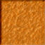
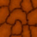

Laigen: VRML 2.0 Adventure Game
Original graphics and game design by Jim Cullen - Copyright 2000, 2001. Laigen is an attraction exclusive to the Cullen Genealogy Homepage and all rights are reserved. No part of this work may be reproduced in any fashion without prior permission from the author.
About Laigen

Jim: Laigen is a VRML 2.0 mini adventure game in which you are required to find a number of red and green crystals in order to escape. The game takes place in a series of fully textured underground chambers which contain a number of animated puzzles you must solve in order to reach the exit. By the way, the flying black ball will open the door to the cathedral... have you been there yet?
Brandon: Laigen was probably one of the first games I played as a kid! (If not, it was probably Lego Island or something.) I have very fond memories of playing this as a kid a little over 20 years ago, so I'm very excited to work on keeping Laigen playable today! Running the game should be no problem at all nowadays, but you can still view the system requirements below, just in case you're running this on a potato!
System Requirements
Jim: A few notes on system requirements. The game was designed to run with a smooth frame rate at full screen on a P166 MMX system with 32 megs of RAM. You should have at least an average video card capable of Direct3D rendering. Software rendering or OpenGL rendering is just not fast enough if you're using Windows95. You may want to reduce your system colors to 16-bit since the game slows to a crawl if you try to run it at 24 or 32 bit color - especially at full screen.
Brandon: If you don't know what a P166 MMX is, or you're wondering why there's only 32 MB of memory, your computer/phone can most likely run Laigen and other VRML games.
File Size

Brandon: Laigen is not a large game at all for today's standards. The entire game (the WRL file + all of the textures) is only 22.3 kB. Your phone takes photos that are way larger than all the files that make up this VRML game.
Jim: The game was coded by hand using Microsoft Wordpad and was written in a condensed style that allowed me to pack in twice the usual amount of code. The standard method of coding would have made the game well over 100KB in size. In addition, I've made use of the LOD node in order to turn off all the sections of the game except for the one you are in. This increases the overall speed significantly.
Tips and Clues
Jim: Need a few tips? There are two colors of crystals - red and green. You must collect all five red crystals in order to escape the chambers. The four green crystals will open other areas of the game and of course there are red crystals in those locked areas so you must find all the red and green crystals! Watch for the locked doors (they have keyholes - see image to the right) since important items will be stashed behind them. There are also short dark pillars scattered about the game and, if you hold your mouse pointer over them, some will give you extra clues. Some of these little pillars will have dark crystals on top of them. These are warps which will zip you to a point earlier in the game. This will come in handy since, at times, going back a few rooms is a necessity and the dark crystals are your only way to do so. Have you found the bonus room? Have you seen the flying black ball? Hmmm... there is more to come...
How To Play

Brandon: Below, you'll find the game window. Once it has loaded, you can begin playing right away! The window is quite small, especially if you're on a laptop or desktop computer. To play the game in fullscreen, right-click (tap and hold on mobile) inside the game window, and click 'Fullscreen'.
Controls
- Move - Click and drag mouse
- Move Faster - Hold Shift
- Interact - Left Mouse Button
- Look Up/Down - Scroll Wheel Up/Down
- Strafe Left/Right - Mouse 3 or Alt, Drag Left/Right
- Jump - Mouse 3 or Alt, Drag Up
- Freelook - Ctrl, then click and drag